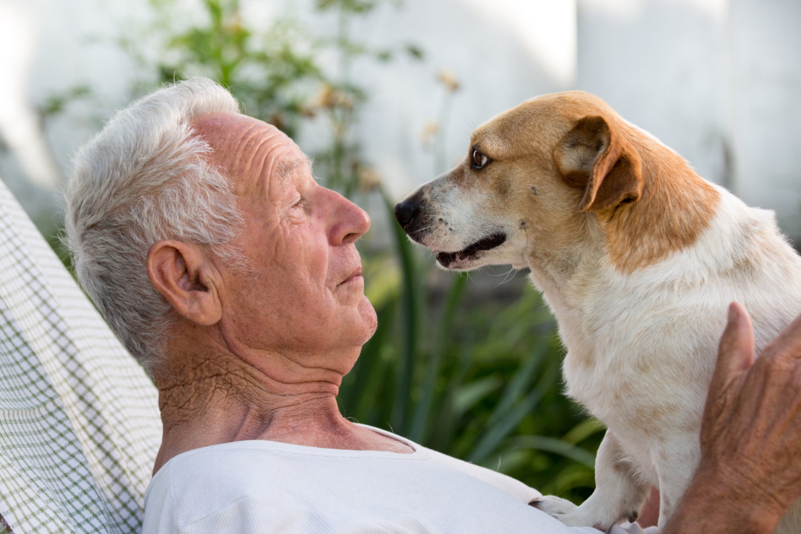

Náš příběh
Tlapkový ráj vznikl z touhy pomáhat těm, kteří si sami pomoci nedokážou – opuštěným a týraným
pejskům. Začali jsme jako malý tým dobrovolníků s velkým srdcem a snem dát psům druhou šanci na
život plný lásky a bezpečí.
Každý pes, který k nám přijde, má svůj příběh – někdy smutný, jindy plný bolesti. U nás ale začíná
nový život. Poskytujeme dočasný azyl, péči a resocializaci, aby se pejskové mohli zotavit a
připravit na svou novou rodinu.
Dnes už nejsme jen útulek, ale místo, kde se tvoří šťastné konce. Díky podpoře dobrovolníků, dárců a
nových majitelů můžeme měnit životy psů i lidí. Tlapkový ráj je důkazem, že láska a odhodlání
dokážou zázraky.
Každý pes si zaslouží svůj ráj – a u nás ho nachází.
